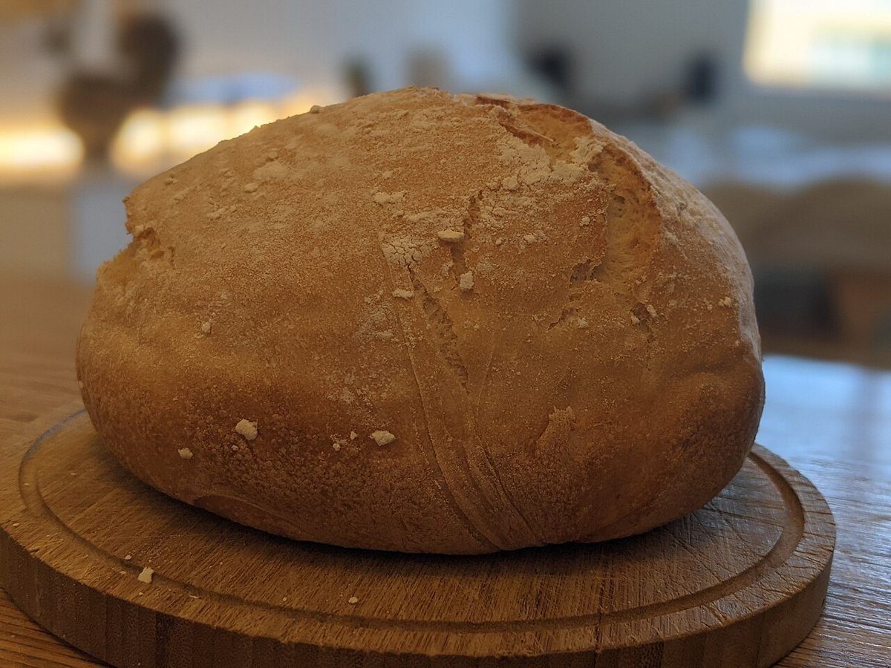
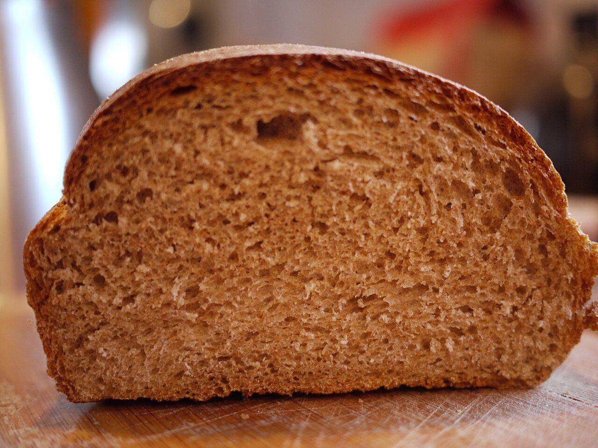

はさむ
パン屋 / 新潟県糸魚川市田海
atelier hasamu
小さなパン屋 atelier hasamu(アトリエ ハサム)
新潟県糸魚川市田海5238にある「小さなパン屋 atelier hasamu」のご案内ページです。営業時間やメニューなど詳しいことは準備中。まずはInstagramをのぞいてみてください。

制作側の連想
グラシン紙の二つ折り
屋号の「hasamu」から、制作側は「挟む」という言葉と、パンを紙にくるんで渡す場面を連想しました。そこでこのサイトは、半透明の紙を二つ折りにして中身を挟むような作りにしています。屋号の由来は分かりません。この連想はお店の理念・由来とは無関係で、制作側の思いつきです。
四枚の紙に挟んで
パンの写真(イメージ)
お店の商品ではない、国外・撮影地不明のフリー素材です。パンのイメージを伝えるために並べています。
- 一

撮影地不明のイメージ - 二

国外のイメージ(米国) - 三

撮影地不明のイメージ - 四

撮影地不明のイメージ

ご案内
お店のこと(確認できたものだけ)
| 所在地 | 〒949-0303 新潟県糸魚川市田海5238 |
|---|---|
| 電話 | なし |
| 営業時間 | 準備中 |
| 定休日 | 準備中 |
| ご予約 | 準備中 |
| 駐車場 | 準備中 |
| SNS | Instagram @hasamu2020 |